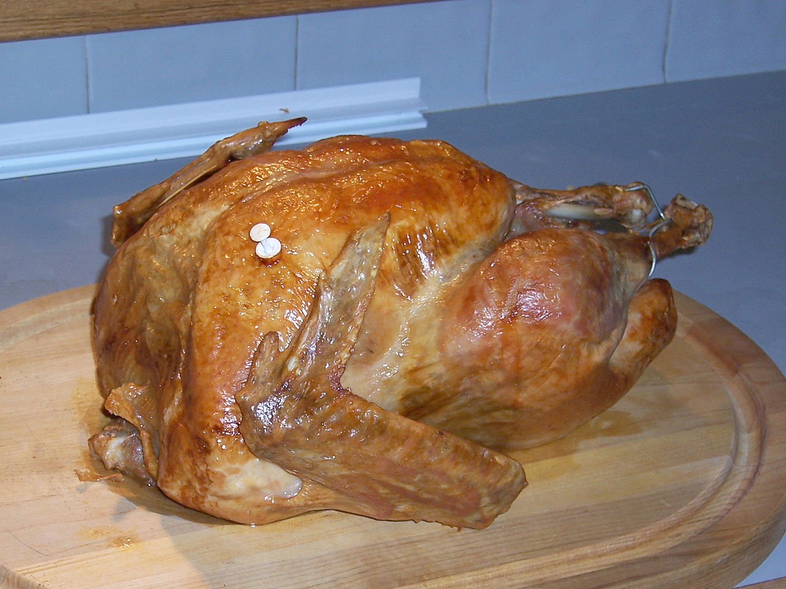

Bacon Wrapped Turkey

A delicious Bacon Wrapped Turkey
Ingredients
- 1/4 cup drieg sage
- 2 tablespoons garlic powder
- 1 (16 pound) whole turkey, neck and giblets removed
- 2 (12 ounce) packages bacon
- 2 cups water
Steps:
- Preheat oven to 350 degrees F (175 degrees C).
- Sprinkle sage and garlic powder over the entire turkey. Wrap turkey completely with bacon. Place turkey on a roasting rack and place roasting rack in a large baking dish. Pour water into the base of the dish.
- Bake turkey in the preheated oven, basting every 45 minutes with juices in baking dish, until no longer pink at the bone and the juices run clear, 3 1/2 to 4 hours. An instant-read thermometer inserted into the thickest part of the thigh should read 165 degrees F (74 degrees C).
Back to main page